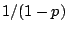
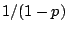
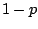
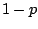
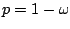
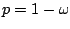

The one-pole low-pass filter has a single pole located at a positive real
number  , as pictured in Figure 8.12. This is just a recirculating
comb filter with delay length
, as pictured in Figure 8.12. This is just a recirculating
comb filter with delay length  , and the analysis of Section
7.4 applies. The maximum gain occurs at a
frequency of zero, corresponding to the point on the circle closest to the
point
, and the analysis of Section
7.4 applies. The maximum gain occurs at a
frequency of zero, corresponding to the point on the circle closest to the
point  . The gain there is . Assuming
. The gain there is . Assuming  is close
to one, if we move a distance of  units
up or down from the real (horizontal) axis, the distance increases by a
factor of about
is close
to one, if we move a distance of  units
up or down from the real (horizontal) axis, the distance increases by a
factor of about  , and so we expect the half-power point to occur at
an angular frequency of about .
, and so we expect the half-power point to occur at
an angular frequency of about .
This calculation is often made in reverse: if we wish the half-power point to
lie at a given angular frequency  , we set . This
approximation only works well if the value of
, we set . This
approximation only works well if the value of  is well under
is well under  ,
as it often is in practice.
It is customary to normalize the one-pole low-pass filter, multiplying it by
the constant factor in order to give a gain of 1 at zero frequency;
nonzero frequencies will then get a gain less than one.
,
as it often is in practice.
It is customary to normalize the one-pole low-pass filter, multiplying it by
the constant factor in order to give a gain of 1 at zero frequency;
nonzero frequencies will then get a gain less than one.
The frequency response is graphed in Figure 8.12 (part b). The
audible frequencies only reach to the middle of the graph; the right-hand
side of the frequency response curve all lies above the Nyquist frequency
 .
.
The one-pole low-pass filter is often used to seek trends in noisy signals. For instance, if you use a physical controller and only care about changes on the order of 1/10 second or so, you can smooth the values with a low-pass filter whose half-power point is 20 or 30 cycles per second.